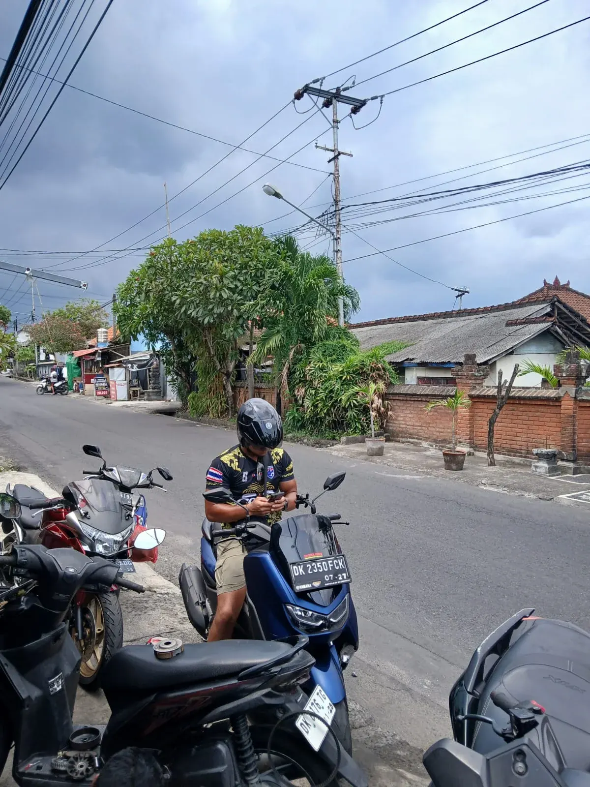
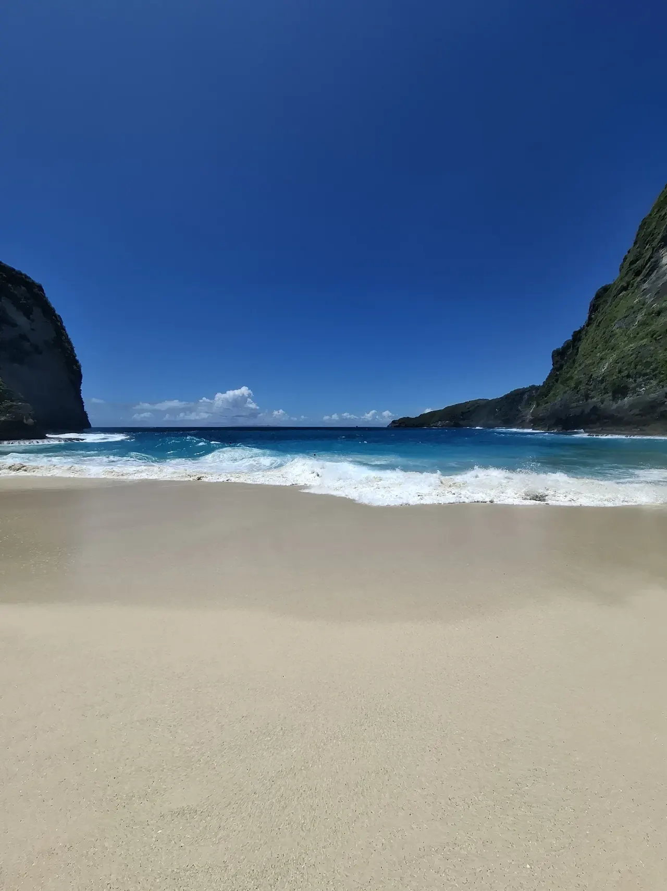
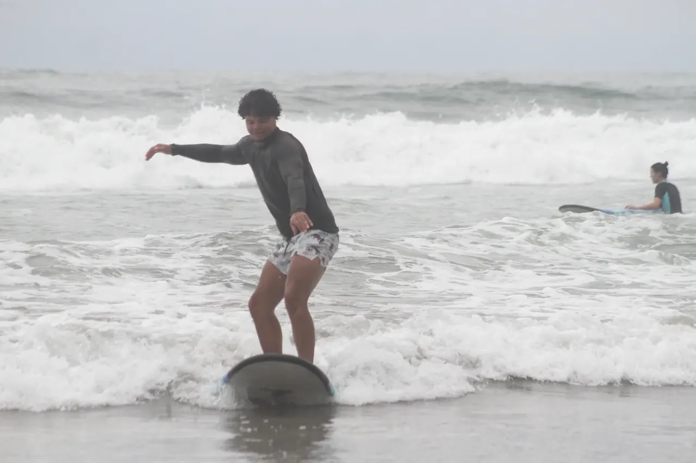
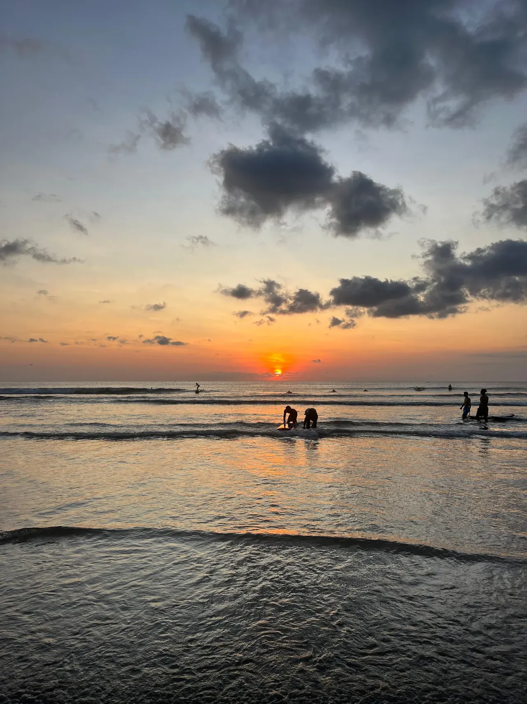
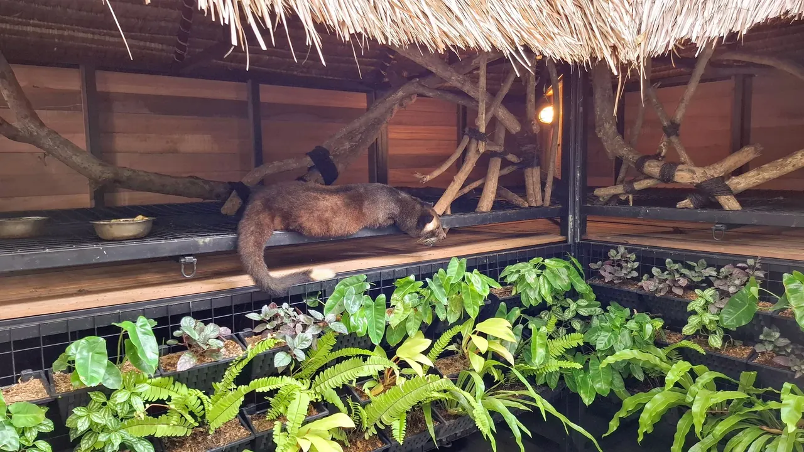
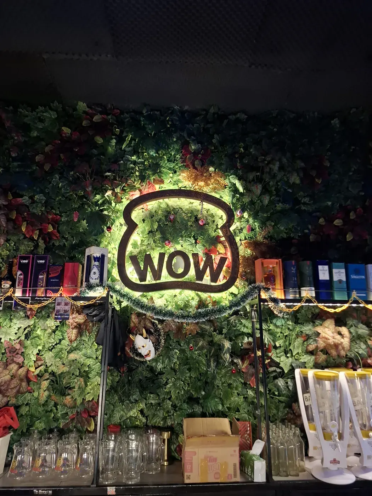
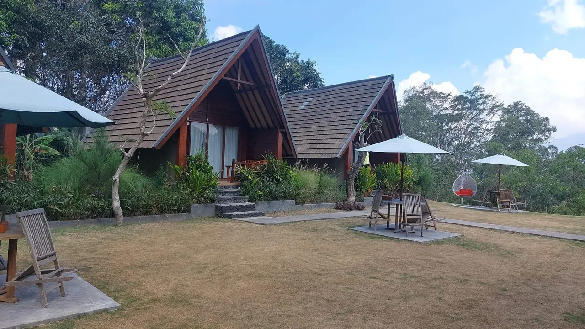
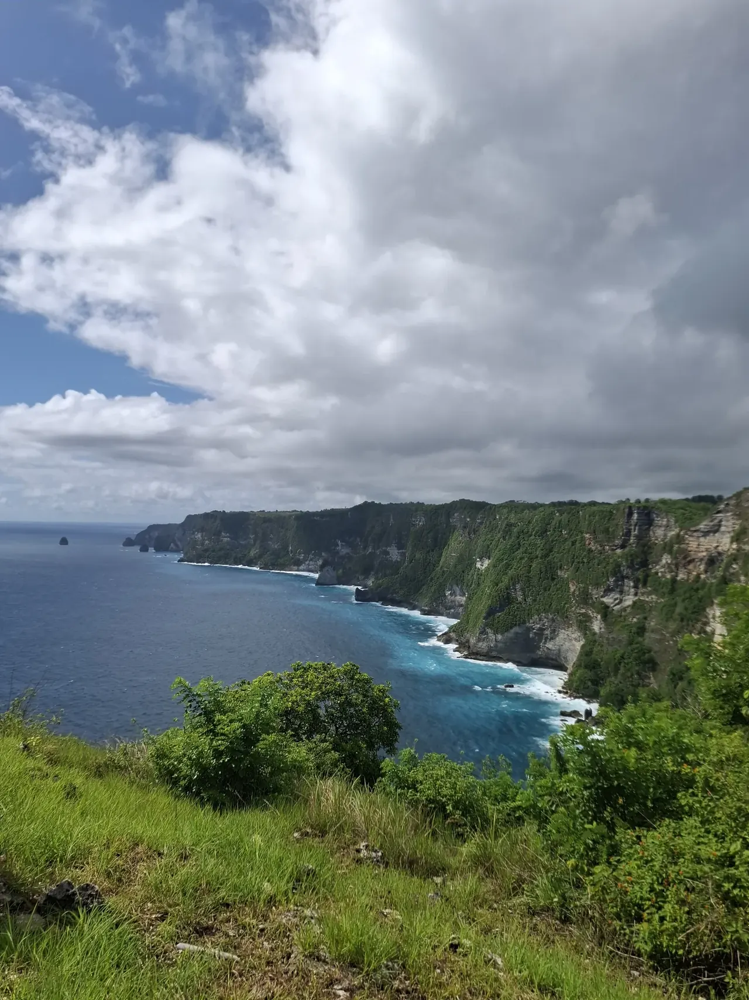
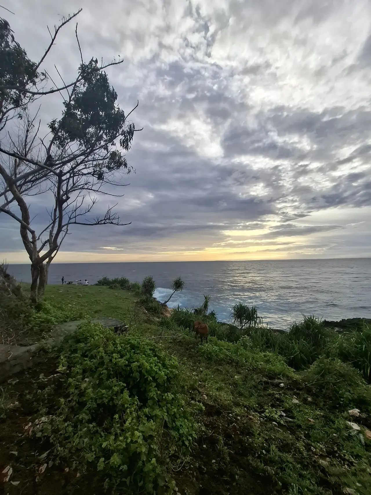

On social media, Bali can look like the perfect backdrop for an influencer lifestyle—or a course someone is trying to sell. I used to joke that I had come to do exactly that. Not really. My parents and brother came to visit me in Thailand shortly before we flew together to Bali in November 2024. We had a week to enjoy the island as a family before my next study minor began.
I stayed in Denpasar while studying Event Management at UNTRIM University. The campus was about a five-minute scooter ride away. Over the next three months, Bali became a place of shared routines, spontaneous plans and experiences I still talk about—with classmates, family and the people I met there.
Getting around on two wheels.
I rented a scooter for about €70 a month. I could have found a cheaper one, but I wanted a fun scooter to ride. It quickly became part of everyday life: a way to get around Denpasar, meet up and explore the island at my own pace.
My parents spent their holiday travelling from place to place. Whenever our plans lined up, we found plenty of time to enjoy Bali together.

A scooter, a new neighbourhood, and room to explore.
It was a small part of the exchange, but it made the island feel more within reach—and gave me a ride I was genuinely excited to hop on.
Bali kept offering a different kind of day.
Some days were for the beach at Sanur or a walk along Kuta’s promenade. Other days meant heading out to the Ubud Monkey Forest, seeing the rice terraces at Tegallalang, or hiking Mount Batur. Bali also had its late nights: I went out at the large beach clubs Finns and Atlas, then found myself making plans for another early start.
One of the most surreal experiences was swimming with dolphins in Lovina and seeing bioluminescent algae after dark. It is hard to forget a night when the water itself seems to glow.




My favourite spot was not a beach club.
About a five-minute walk from my hotel was a local place called Warunk WOW. Most of the students I knew had barely heard of it. That was part of the charm: it felt like a local hangout rather than another stop on a visitor’s checklist.
During the day, I could stop by for coffee or lunch in its open internet-café space. Upstairs, a small club room—around 200 people—hosted local DJs or a band. It kept a 24/7 rhythm: daytime café, then a club upstairs every evening. I ended up there almost daily, got to know the staff and regulars, and became a familiar face. I might even have been a little iconic in that room—at least, that is how I remember it.

From coffee stop to second home.
The best part was the people. A familiar place, friendly faces and a local DJ or band made the nights feel personal.
See Warunk WOW on Instagram ↗Some of the brightest blues were beyond Bali.
During the break in my studies, my classmates and I made trips to the islands around Bali: Nusa Lembongan, Nusa Ceningan, Nusa Penida, Lombok and the Gili Islands. We celebrated New Year’s Eve at Mad Monkey, a well-known party hostel on the Gilis.
The beaches and coastlines on these nearby islands were genuinely beautiful. They gave us a welcome change of scenery from our everyday routine in Bali and made the holiday trips with my classmates even more memorable.




The flying foxes of Alas Kedaton.
This clip is from Alas Kedaton Monkey Forest, where I filmed huge fruit bats hanging among the trees. They are flying foxes from the Pteropus group, which includes some of the world’s largest bats. Seeing them gathered in the forest was a very different wildlife moment from visiting the monkeys in Ubud.
Big bats in the forest canopy.
The flying foxes are an unforgettable part of this wildlife stop. Their size makes the name feel fitting when you see them hanging in the trees.
Beautiful memories, difficult realities.
I want to be honest: I have some regret about choosing to live on Bali for three months. It is not because of the people I met, the culture I got to know or the fun I had. It is because the island felt far too crowded for me.
Traffic could turn a five-kilometre ride into an hour on the road. The beaches on Bali itself were not always as beautiful as the ones I had seen online; the nearby islands offered the clearer water and scenery I had imagined.
I also noticed litter across public areas, plastic being burned, and air that felt heavily polluted. After more than fifteen minutes on a scooter, I could sometimes run a fingernail over my skin and see a dark mark. That made the pollution feel very real to me. These are my impressions from the places I visited, and one of the reasons I do not expect to return to Bali soon.
Bali gave me days I would relive in a heartbeat—and a few realities I could not edit out of the frame.
If I could go back to see the people I met and share those experiences with my family again, I would be there in a heartbeat. For a longer stay, though, the crowds, traffic and pollution changed how I felt about the island. Thailand still has my heart as my favourite place in the region.
Curious about my time living and studying in Bali?